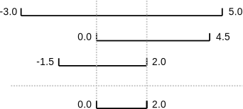

Software Testing
Test Driven Development
Learning Objectives
- Explain what test-driven development is, and use it when creating new functions.
- Explain why variables should be initialized using actual data values rather than arbitrary constants.
Test-Driven Development
Test driven development (TDD) is a philosophy whereby the developer creates code by writing the tests first. That is to say you write the tests before writing the associated code!
This is an iterative process whereby you write a test then write the minimum amount code to make the test pass. If a new feature is needed, another test is written and the code is expanded to meet this new use case. This continues until the code does what is needed.
For example, suppose we need to find where two or more time series overlap. The range of each time series is represented as a pair of numbers, which are the time the interval started and ended. The output is the largest range that they all include:

Most novice programmers would solve this problem like this:
- Write a function
range_overlap. - Call it interactively on two or three different inputs.
- If it produces the wrong answer, fix the function and re-run that test.
This clearly works — after all, thousands of scientists are doing it right now — but there’s a better way:
- Write a short function for each test.
- Write a
range_overlapfunction that should pass those tests. - If
range_overlapproduces any wrong answers, fix it and re-run the test functions.
Writing the tests before writing the function they exercise is called test-driven development (TDD). Its advocates believe it produces better code faster because:
- If people write tests after writing the thing to be tested, they are subject to confirmation bias, i.e., they subconsciously write tests to show that their code is correct, rather than to find errors.
- Writing tests helps programmers figure out what the function is actually supposed to do.
Here are three test functions for range_overlap:
assert range_overlap([ (0.0, 1.0) ]) == (0.0, 1.0)
assert range_overlap([ (2.0, 3.0), (2.0, 4.0) ]) == (2.0, 3.0)
assert range_overlap([ (0.0, 1.0), (0.0, 2.0), (-1.0, 1.0) ]) == (0.0, 1.0)---------------------------------------------------------------------------
AssertionError Traceback (most recent call last)
<ipython-input-25-d8be150fbef6> in <module>()
----> 1 assert range_overlap([ (0.0, 1.0) ]) == (0.0, 1.0)
2 assert range_overlap([ (2.0, 3.0), (2.0, 4.0) ]) == (2.0, 3.0)
3 assert range_overlap([ (0.0, 1.0), (0.0, 2.0), (-1.0, 1.0) ]) == (0.0, 1.0)
AssertionError:The error is actually reassuring: we haven’t written range_overlap yet, so if the tests passed, it would be a sign that someone else had and that we were accidentally using their function.
And as a bonus of writing these tests, we’ve implicitly defined what our input and output look like: we expect a list of pairs as input, and produce a single pair as output.
Something important is missing, though. We don’t have any tests for the case where the ranges don’t overlap at all:
assert range_overlap([ (0.0, 1.0), (5.0, 6.0) ]) == ???What should range_overlap do in this case: fail with an error message, produce a special value like (0.0, 0.0) to signal that there’s no overlap, or something else? Any actual implementation of the function will do one of these things; writing the tests first helps us figure out which is best before we’re emotionally invested in whatever we happened to write before we realized there was an issue.
And what about this case?
assert range_overlap([ (0.0, 1.0), (1.0, 2.0) ]) == ???Do two segments that touch at their endpoints overlap or not? Mathematicians usually say “yes”, but engineers usually say “no”. The best answer is “whatever is most useful in the rest of our program”, but again, any actual implementation of range_overlap is going to do something, and whatever it is ought to be consistent with what it does when there’s no overlap at all.
Since we’re planning to use the range this function returns as the X axis in a time series chart, we decide that:
- every overlap has to have non-zero width, and
- we will return the special value
Nonewhen there’s no overlap.
None is built into Python, and means “nothing here”. (Other languages often call the equivalent value null or nil). With that decision made, we can finish writing our last two tests:
assert range_overlap([ (0.0, 1.0), (5.0, 6.0) ]) == None
assert range_overlap([ (0.0, 1.0), (1.0, 2.0) ]) == None---------------------------------------------------------------------------
AssertionError Traceback (most recent call last)
<ipython-input-26-d877ef460ba2> in <module>()
----> 1 assert range_overlap([ (0.0, 1.0), (5.0, 6.0) ]) == None
2 assert range_overlap([ (0.0, 1.0), (1.0, 2.0) ]) == None
AssertionError:Again, we get an error because we haven’t written our function, but we’re now ready to do so:
def range_overlap(ranges):
'''Return common overlap among a set of [low, high] ranges.'''
lowest = 0.0
highest = 1.0
for (low, high) in ranges:
lowest = max(lowest, low)
highest = min(highest, high)
return (lowest, highest)(Take a moment to think about why we use max to raise lowest and min to lower highest). We’d now like to re-run our tests, but they’re scattered across three different cells. To make running them easier, let’s put them all in a function:
def test_range_overlap():
assert range_overlap([ (0.0, 1.0), (5.0, 6.0) ]) == None
assert range_overlap([ (0.0, 1.0), (1.0, 2.0) ]) == None
assert range_overlap([ (0.0, 1.0) ]) == (0.0, 1.0)
assert range_overlap([ (2.0, 3.0), (2.0, 4.0) ]) == (2.0, 3.0)
assert range_overlap([ (0.0, 1.0), (0.0, 2.0), (-1.0, 1.0) ]) == (0.0, 1.0)We can now test range_overlap with a single function call:
test_range_overlap()---------------------------------------------------------------------------
AssertionError Traceback (most recent call last)
<ipython-input-29-cf9215c96457> in <module>()
----> 1 test_range_overlap()
<ipython-input-28-5d4cd6fd41d9> in test_range_overlap()
1 def test_range_overlap():
----> 2 assert range_overlap([ (0.0, 1.0), (5.0, 6.0) ]) == None
3 assert range_overlap([ (0.0, 1.0), (1.0, 2.0) ]) == None
4 assert range_overlap([ (0.0, 1.0) ]) == (0.0, 1.0)
5 assert range_overlap([ (2.0, 3.0), (2.0, 4.0) ]) == (2.0, 3.0)
AssertionError:The first of the tests that was supposed to produce None fails, so we know there’s something wrong with our function. What we don’t know, though, is whether the other four tests passed or failed, because Python halted the program as soon as it spotted the first error. Still, some information is better than none, and if we trace the behavior of the function with that input, we realize that we’re initializing lowest and highest to 0.0 and 1.0 respectively, regardless of the input values. This violates another important rule of programming: always initialize from data.
Pre- and post-conditions
Suppose you are writing a function called average that calculates the average of the numbers in a list. What pre-conditions and post-conditions would you write for it? Compare your answer to your neighbor’s: can you think of a function that will pass your tests but not hers or vice versa?
Fixing and testing
Fix range_overlap. Re-run test_range_overlap after each change you make.